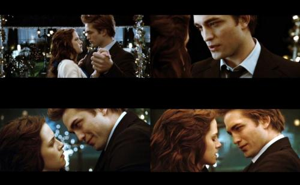
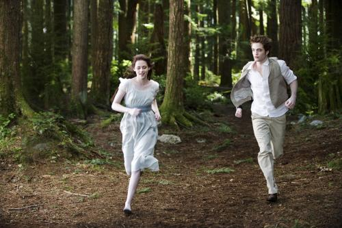

每个人都有自己的电影软肋――－－题记 一个男人。不死。不老。永远保持17岁时的英俊。拥有传说中贵族的优雅。具有伤害任何人类的力量。
疾如风。不苟言笑。善良。24小时永动。不用吃饭，也不用加油。专一爱你。存在的意义就是保护你。随时准备为你抵挡从任何方向来的伤害。最重要的，还爱得浪漫。没事就带你爬到森林最高的树木顶端看风景。小车开得跟飞机一样快。晚上你睡着了他就在旁边守护你。最最重要的是，他从不嫉妒。能容忍你交别的男朋友
兄弟们，你们的竞争对手来了！姐妹们，这是人吗？当然不是！是吸血鬼。目前来看，唯一的障碍就是，他每分每秒都要克制自己吸你血的欲望。以及，你每分每秒都在向老去和死亡前进。怎么办？
这样的爱情要开始吗？开始了以后怎么办？《暮光之城》会告诉你答案。 唉，又做了一回免费的托。但我只能承认。迷上这个电影系列了。不是因为电影本身有多好，而是电影种种，刚好打造得与内心隐秘所想契合。所以有点东西，成不了艺术品，依然畅销一时，确是真有妙处，并非垃圾食品。 很琼瑶。

真的。这点我也承认。纯属命中注定我爱你，一见钟情钟到死。爱德华身上聚集了很多浪漫爱情梦想。本文开头已经罗列。其中任何一点，都足以让人欣慰，更何况他都具备。所以理智的大男人们，不感冒这部电影是很正常的，也不推荐你们去看。虽然，影片确是弥漫了吸血鬼电影所必备的阴暗气息。同时张弛有度。没有在爱情面前忘记咱们吸血鬼有力量。也狠狠干了一架。
与《范海辛》、《黑夜传说》是属于隔着一个世纪的作品。而我最初找到这部电影，也仅仅是，吸血鬼题材。我怎么就爱看这种黑暗的电影呢？ 吸血鬼库伦家族，秉持了以往电影里吸血鬼的所有优点，然后千年不死，来到21世纪，堪称史上最时尚吸血鬼家族成员。老天。这个故事，简直就是360度锁定当下的少男少女，你要完美爱情，给你；你要时尚男女，给你；你要跌宕起伏的剧情，给你；你要奇幻，给你……怎么能不红呢？
时隔一年，今天才在国内上映，会不会再掀高潮？我不知道别人，我是已经喜欢这个故事里面的爱德华，不记得多久了。 其实罗伯特·帕丁森的演技，和《剪刀手爱德华》是有神视的。那又怎么样呢？万千少女都爱上了这个幻像。而有个女孩，代替大家经历了这场爱情。真是应该感谢原作者斯蒂芬妮·梅耶。如果抛开爱德华这个角色。我得承认，不太会感冒帕丁森本人。是故事成全了他。不是他的演技成全了我们的梦。但是乐意将电影看5遍，只因觉得爱德华是非常完美的少女情人。
 当然，女主角贝拉不属于我喜欢的类型。虽然她确是很善良。具有美国电影里一般不太具有的美德。为了她母亲能与第二春相处而去气候让自己讨厌的地方生活。为了爱情，愿意变成吸血鬼。我喜欢的还是《黑夜传说》里凯特·贝尔塞金一样的坚强独立打天下类型。但是一个电影里面，如果两位主角都很强悍，就无法衬托对方的极致性格。男生就无法看出强大，女生就无法让男生看到我见犹怜之处。再次感谢斯蒂芬妮·梅耶，创造了一个实践众多少女浪漫情怀的故事。 电影尽量遵循了原著的精神，情节上有小小改动，但基本上还是属于完美再现。值得评论的地方不多。因为真的就是用吸血鬼的壳包装了一个爱情故事。然后很唯美。唯美到，吸血鬼在阳光下是闪闪发光如钻石，而不是变成黑烟消失。神啊，这些原本人们内心深处地狱都不收留的孩子们，如今成了阳光下的艺术品了。虽然他们自称没有灵魂，但是，都已经不会挂了，也无从当成成为灵魂形式的那一天了。 如果一定要探究，看过《呼啸山庄》原著的人，会发现哥特式一脉相承的气息，以及相似的爱情.如果你只看了第一部，可能不会完全认同，看完《暮光之城》原著，你会发现，真的也是三角恋。真的也是男一号在中途的离开，让女主角和男二号有了发展空间。而女主角，确是也喜欢上了男二号。神啊，我这不是在说《暮光之城》山寨《呼啸山庄》么？

男主角以为女主角死了，然后自己也不想活了，企图想办法把自己弄死。神啊，暮光迷们不会恨我吧？但我得说，在这里爱德华的寻死，真可以理解。几千年了，他都那么孤单。好不容易找到一份爱情。忽然就没了。经历过孤独的人，尤其明白孤独的味道。毁灭对于他来说，真是一种好解脱。所以聪明人总不愿意自己孤独地长生不老。

导演：凯瑟琳·哈德威克
主演：克里斯汀·斯图尔特、罗伯特·帕丁森、
类型：剧情、奇幻、惊悚、剧情
片长：122min